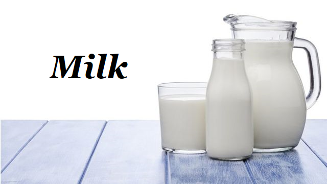
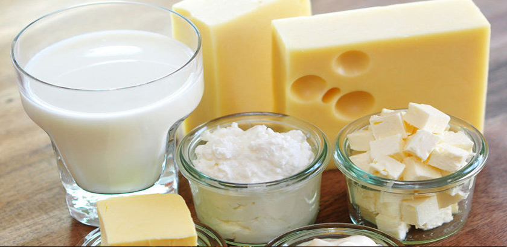
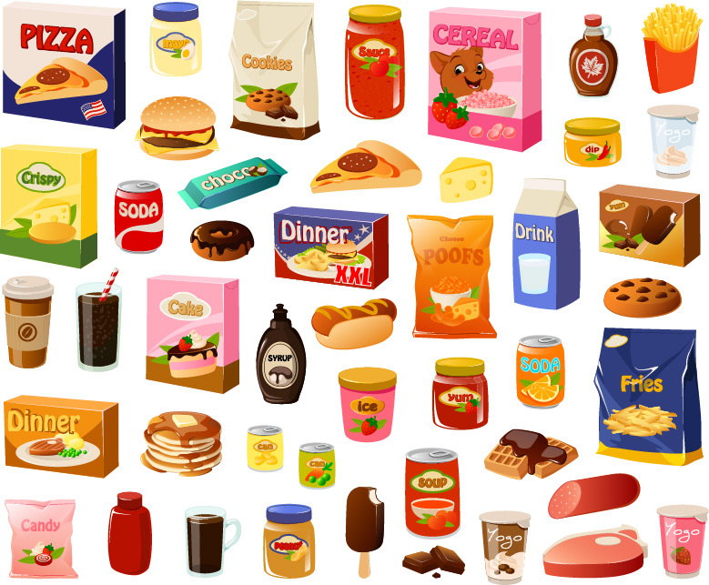

Es debido al proceso que tiene la leche para el consumo humano, en el cual la leche adquiere sustancias químicas y además de las grasas saturadas una de ellas a interpretar es la duración de la leche es por ello
que el cuerpo no asimila esas sustancias, por lo cual busca una manera de eliminar o expulsar esas sustancias químicas, una forma es mediante la piel ya sea en la cara o en
alguna parte del cuerpo en específico por ello el exceso de sebo produce granos en la piel.
Se encuentra en el grupo de los lácteos esto incluye tanto como la leche y sus derivados procesados que lleva la misma situación de aparecer granos en la piel por el exceso de sebo.
Es bueno saber que los alimentos naturales no actuán de la misma manera en el cuerpo humano como lo hacen los alimentos procesados pero también hay que saber como consumir los
alimentos naturales por que estos por alguna razón llevan un proceso para el consumo humano uno de ellos en la leche es que llevan bacterias como la salmonella.
Los productos procesados tienen una mayor cantidad de sustancias químicas que no se incluyen en la información del producto a pesar de ello en el valor nutricional nos damos cuenta
que no aportan en nada para la salud en nuestro cuerpo que al consumir estos productos nuestro cuerpo busca la forma de eliminar lo consumido por la piel de la misma manera el
sebo se acumula en cantidad fuera de lo normal y produce granos en la piel.
1.-Es recomendable lavarse la cara 3 veces al día para evitar la acumulación de sebo en la la cara con un jabón natural o un jabón pH neutro para evitar irritaciones en la piel.
2.-Hay alimentos que ayudan a combatir el acné uno de ellos es la zanahoria, recomiendo tomar zumo de zanahoria durante la etapa de la pubertad ayuda a eliminarel exceso de sebo
en la piel a parte de proporcionar vitaminas para el cuerpo entre ellas la vitamina A, B3, E y K entre otros.
3.-No tocarse la cara con la manos sucias.